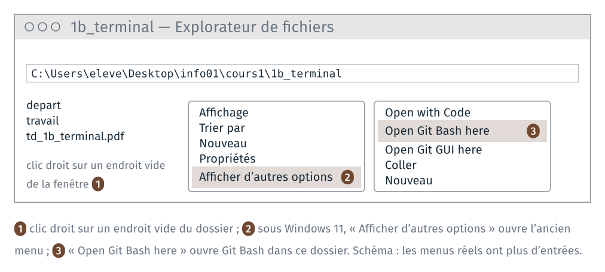
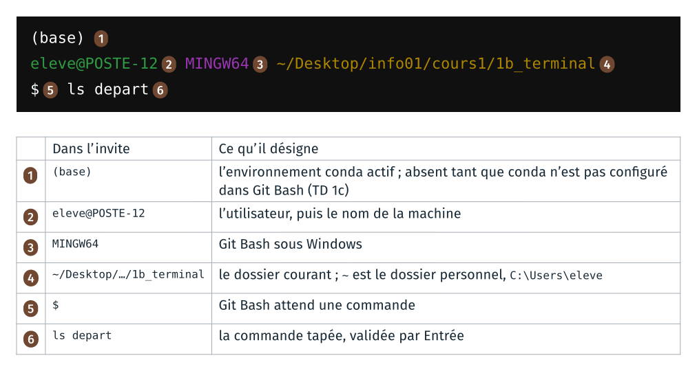
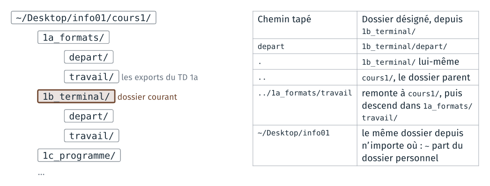

TD 1b — Les fichiers du TD 1a en ligne de commande#
Note
Les fichiers des TD de la séance sont dans l’archive info01-cours1_v2.zip.
Version 2 du cours 1 : proposition de travail pour 2027-2028. Ce TD est nouveau : il reprend en ligne de commande une partie du TD 1a de 2026 (renommer une extension, un espace dans un nom).
Le TD refait au clavier, dans un terminal, ce que le TD 1a a fait à la souris : se déplacer dans les dossiers, copier, renommer et ouvrir des fichiers. Il dure une quinzaine de minutes.
Le terminal du module est Git Bash, installé avec git sur les postes de la salle. Les commandes de ce guide sont celles de bash : elles se tapent à l’identique dans le terminal de macOS et de Linux.
Étape |
Objectif |
Ce qu’on fait |
|---|---|---|
1 |
situer le terminal dans l’arborescence |
ouvrir Git Bash dans le dossier du TD, et lire l’invite |
2 |
se déplacer par des chemins relatifs |
se déplacer et lister le contenu des dossiers |
3 |
manipuler des fichiers par des commandes |
copier, renommer et ouvrir des fichiers |
4 |
écrire un chemin qui contient un espace |
écrire un nom de fichier qui contient un espace |
5 |
agir sur plusieurs fichiers en une commande |
copier plusieurs fichiers d’un coup, supprimer un fichier |
Rappels avant de commencer#
Un terminal, plusieurs fenêtres. Le poste a plusieurs terminaux :
l’invite de commandes (cmd), PowerShell, Git Bash. Chacun a son langage.
Les commandes du guide sont celles de Git Bash, et la dernière annexe donne
leurs équivalents dans les deux autres. L’invite, au début de chaque ligne,
indique le terminal employé :
Git Bash |
Invite de commandes |
PowerShell |
|---|---|---|
|
|
|
|
|
|


La capture de Git Bash date de 2011 (MINGW32). Sources et licences :
images/terminaux/CREDITS.md dans le dépôt du cours.
Taper une commande. Une commande se tape après le $, puis se valide
par Entrée. Deux touches font gagner du temps :
Touche |
Ce qu’elle fait |
|---|---|
flèche vers le haut |
rappelle la commande précédente, à modifier ou relancer |
|
complète le nom de fichier ou de dossier commencé |
|
interrompt la commande en cours |
Sur un clavier français : ~ se tape AltGr + 2, puis espace ; |,
AltGr + 6. Coller dans Git Bash : clic droit, puis « Paste », ou Maj +
Inser ; Ctrl + V ne colle pas.
Une commande qui réussit n’affiche souvent rien. cp, mv, mkdir,
rm n’affichent rien quand tout se passe bien. Un message après une de ces
commandes est un message d’erreur : le lire.
1 · Ouvrir Git Bash dans le dossier du TD#
À faire : ouvrir
cours1\1b_terminal\dans l’explorateur ; y ouvrir Git Bash par le clic droit ; lire l’invite.À obtenir : une fenêtre Git Bash dont l’invite se termine par
~/Desktop/info01/cours1/1b_terminal.
Dossier de départ : cours1/1b_terminal/, tel que décompressé au TD 1a.
1b_terminal/
├── depart/ les fichiers du TD 1a : raven.odt, raven_brut.html…
├── travail/ vide
└── td_1b_terminal.pdf
Ouvrir Git Bash par le clic droit#
Dans l’explorateur, ouvrir
Bureau\info01\cours1\1b_terminal.Clic droit sur un endroit vide de la fenêtre (pas sur un fichier).
Sous Windows 11, choisir « Afficher d’autres options », en bas du menu.
Choisir « Open Git Bash here ».

Git Bash s’ouvre, et son dossier courant est le dossier où l’on a cliqué.
Autre façon : menu Démarrer, « Git Bash », puis taper
cd ~/Desktop/info01/cours1/1b_terminal
Lire l’invite#

Sur la capture, la ligne (base) n’est pas encore là : elle apparaît au
début du TD 1c.
Vérification :
pwd
affiche le chemin absolu du dossier courant :
/c/Users/eleve/Desktop/info01/cours1/1b_terminal
Git Bash écrit les chemins à la façon de Linux : des barres obliques /,
et le disque C: devient /c. Le même dossier s’écrit
C:\Users\eleve\Desktop\info01\cours1\1b_terminal dans l’explorateur.
2 · Se déplacer et lister#
À faire : lister le dossier courant et
depart/; afficher les entrées cachées ; descendre dansdepart/et remonter ; lister un dossier d’un autre TD.À obtenir : l’invite suit chaque
cd;ls ../1a_formats/travailmontre les exports du TD 1a.
Lister#
ls
ls liste le contenu du dossier courant : depart/, travail/ et les
fichiers du TD. Le / à la fin d’un nom marque un dossier.
ls depart
auld_lang_syne.odt raven_brut.html
auld_lang_syne_brut.html raven_style.html
auld_lang_syne_style.html raven_une_ligne.donnees
auld_lang_syne_une_ligne.donnees raven_une_ligne.txt
auld_lang_syne_une_ligne.txt style.css
raven.odt
depart est un argument : le dossier à lister. Sans argument, ls
liste le dossier courant.
Les entrées cachées#
ls travail
ls -a travail
ls travail n’affiche rien : le dossier est vide. ls -a travail affiche
deux entrées :
./ ../
-a est une option : elle modifie ce que fait la commande (« all »,
tout afficher). . désigne le dossier lui-même, .. son dossier parent.
Tout dossier les contient ; ls ne les affiche pas, parce que leur nom
commence par un point, la marque d’un fichier caché.
Se déplacer#
cd depart
pwd
L’invite et pwd se terminent maintenant par 1b_terminal/depart. cd
(« change directory ») change le dossier courant.
cd ..
pwd
retour dans 1b_terminal. Les chemins relatifs partent du dossier courant :

ls ../1a_formats/travail
liste les fichiers exportés au TD 1a (raven.pdf, raven.png), sans
quitter 1b_terminal.
Vérification : l’invite se termine par 1b_terminal.
Si cd affiche No such file or directory, le chemin tapé n’existe pas
depuis le dossier courant : lire l’invite, puis ls pour voir les noms
disponibles. Tab complète un nom commencé et évite les fautes de frappe.
3 · Copier, renommer, ouvrir#
À faire : copier
raven.odtdanstravail/, le renommer enraven_odt.pdf, l’ouvrir parstart; refaire avec deux autres noms.À obtenir : trois copies de
raven.odtdanstravail/, et, pour chacune, le logiciel que Windows a lancé.
Copier#
cp depart/raven.odt travail/
ls travail
raven.odt
cp source destination copie ; la destination est ici un dossier, et la
copie garde son nom.
Renommer#
mv travail/raven.odt travail/raven_odt.pdf
ls travail
raven_odt.pdf
mv déplace ou renomme : ici, le fichier reste dans travail/ et change de
nom. Windows demandait une confirmation quand on changeait l’extension à la
souris ; mv n’en affiche pas.
Ouvrir#
start travail/raven_odt.pdf
start ouvre un fichier avec le logiciel que Windows associe à son
extension, comme un double-clic dans l’explorateur.
À noter : le logiciel lancé, et ce qu’il affiche.
Deux autres copies, et leur ouverture :
cp depart/raven.odt travail/riri.fifi.loulou.odt
start travail/riri.fifi.loulou.odt
cp depart/raven.odt travail/raven.loulou
start travail/raven.loulou
Pour raven.loulou, une fenêtre de Windows demande avec quel logiciel
ouvrir le fichier : choisir LibreOffice Writer.
À noter : pour chaque copie, le logiciel lancé et ce qu’il affiche.
Vérification :
ls travail
raven.loulou raven_odt.pdf riri.fifi.loulou.odt
Si start ne fait rien, essayer explorer.exe, qui ouvre aussi un fichier
avec son logiciel associé ; les barres du chemin s’écrivent alors à la façon
de Windows : explorer.exe travail\\raven_odt.pdf.
4 · Un espace dans un nom de fichier#
À faire : copier
raven_brut.htmlsous le nomraven brut.html, sans puis avec guillemets ; l’ouvrir.À obtenir : la copie
raven brut.htmldanstravail/, ouverte dans le navigateur.
cp depart/raven_brut.html travail/raven brut.html
Git Bash affiche un message d’erreur, par exemple :
cp: target 'brut.html': No such file or directory
Git Bash découpe la ligne aux espaces : cp a reçu trois noms,
depart/raven_brut.html, travail/raven et brut.html, et il copie les
deux premiers dans le troisième, qu’il prend pour un dossier. Entre
guillemets, le nom reste un seul argument :
cp depart/raven_brut.html "travail/raven brut.html"
ls travail
start "" "travail/raven brut.html"
La page s’ouvre dans le navigateur. start prend le premier argument entre
guillemets pour le titre d’une fenêtre : d’où les guillemets vides ""
avant le nom du fichier.
À noter : la mise en forme de la page, et la raison, d’après le TD 1a.
La page s’affiche sans mise en forme : son chemin relatif style.css ne
trouve pas de feuille de style dans travail/. Copier la feuille, puis
recharger la page par F5 dans le navigateur :
cp depart/style.css travail/
Les noms de fichiers du module n’ont pas d’espace : _ le remplace.
5 · Copier plusieurs fichiers d’un coup#
À faire : créer
travail/pages/; y copier les quatre pages web par un motif ; supprimer l’une d’elles.À obtenir : trois pages dans
travail/pages/.
mkdir travail/pages
cp depart/*.html travail/pages/
ls travail/pages
mkdir crée un dossier. Dans depart/*.html, * remplace n’importe quelle
suite de caractères : Git Bash remplace le motif par la liste des noms qui
correspondent, puis lance cp avec ces quatre noms.
ls depart/*.txt
depart/auld_lang_syne_une_ligne.txt depart/raven_une_ligne.txt
rm travail/pages/auld_lang_syne_brut.html
ls travail/pages
rm supprime le fichier, sans passer par la corbeille : il ne se récupère
pas. Relire la commande avant de valider.
Vérification : ls travail/pages affiche trois pages.
Ce que le TD fait constater#
À lire après avoir fait les étapes.
Les mêmes opérations, au clavier. cp, mv, mkdir, rm et start
font ce que font Ctrl + C, F2, « Nouveau dossier », Suppr et le
double-clic dans l’explorateur. Le terminal les fait sans confirmation, et
rm sans corbeille.
L’extension décide du logiciel. mv a changé le nom du fichier, et
aucun octet de son contenu. Windows choisit le logiciel d’après la fin du
nom : un lecteur PDF pour raven_odt.pdf, qui ne peut pas l’ouvrir ;
LibreOffice pour riri.fifi.loulou.odt, qui l’ouvre ; aucun pour
raven.loulou, dont l’extension est inconnue : une fenêtre demande
lequel employer. Même constat qu’au TD 1a de 2026, où le renommage se faisait à la
souris.
Le dossier courant. Chaque commande part du dossier courant, affiché
dans l’invite et par pwd. Un chemin relatif (depart,
../1a_formats/travail) part de lui ; un chemin absolu (/c/Users/…) ou
qui commence par ~ part d’ailleurs, et vaut depuis n’importe quel
dossier.
Une ligne découpée aux espaces. Git Bash découpe la ligne en mots
avant de lancer la commande : le premier est le programme, les suivants ses
options et ses arguments. Un nom qui contient un espace s’écrit donc entre
guillemets. Le motif * est remplacé par Git Bash, lui aussi, avant que la
commande ne démarre.
Annexe · Les commandes du TD#
Commande |
Ce qu’elle fait |
Dans l’explorateur |
|---|---|---|
|
affiche le dossier courant |
la barre d’adresse |
|
liste le contenu d’un dossier |
la fenêtre ouverte |
|
liste aussi les entrées cachées |
Affichage, Éléments masqués |
|
change de dossier courant |
double-clic ; dossier parent |
|
copie |
|
|
déplace ou renomme |
glisser ; |
|
crée un dossier |
Nouveau dossier |
|
supprime, sans corbeille |
|
|
ouvre avec le logiciel associé |
double-clic |
|
l’aide de la commande |
Annexe · Les mêmes commandes dans PowerShell et l’invite de commandes#
Le TD se fait dans Git Bash. Les mêmes opérations se font dans PowerShell et
dans l’invite de commandes (cmd), avec d’autres commandes ou d’autres
options. Le tableau les donne pour les commandes du TD, tapées depuis le
dossier 1b_terminal. [À vérifier sur un poste de la salle : les colonnes
PowerShell et invite de commandes sont tirées de la documentation de
Microsoft, et n’ont pas été exécutées.]
Opération |
Git Bash |
PowerShell |
Invite de commandes |
|---|---|---|---|
afficher le dossier courant |
|
|
|
lister un dossier |
|
|
|
lister aussi les entrées cachées |
|
|
|
descendre dans un dossier |
|
|
|
remonter au dossier parent |
|
|
|
copier un fichier |
|
|
|
renommer un fichier |
|
|
|
ouvrir avec le logiciel associé |
|
|
|
ouvrir un fichier dont le nom a un espace |
|
|
|
créer un dossier |
|
|
|
copier plusieurs fichiers |
|
|
|
supprimer un fichier, sans corbeille |
|
|
|
afficher l’aide d’une commande |
|
|
|
Dans PowerShell, ls, cp, mv, rm et mkdir sont d’autres noms
des commandes de PowerShell : Get-ChildItem, Copy-Item, Move-Item,
Remove-Item et New-Item. Ils prennent les options des commandes de
PowerShell. Ainsi ls -a échoue, et ls -Force affiche les entrées cachées.
PowerShell accepte / et \ dans les chemins. Son start n’attend pas de
titre de fenêtre, et s’écrit donc sans "".
Dans l’invite de commandes, les chemins s’écrivent avec \, car /
introduit une option (dir /a). ren prend le nouveau nom seul, sans
dossier. start lit le premier argument entre guillemets comme le titre de
la fenêtre, d’où le "" devant un nom entre guillemets.
Les listes n’ont pas la même présentation. PowerShell affiche pour chaque entrée sa date et sa taille, et l’invite de commandes ajoute le nom du disque et le total des tailles. Les noms sont les mêmes.
Python. Dans l’invite de commandes, python est disponible dans
l’invite de commandes d’Anaconda, au menu Démarrer. Dans PowerShell, il faut
ouvrir l’invite PowerShell d’Anaconda, si elle est installée sur le poste
[à vérifier]. Le réglage fait au début du TD 1c ne vaut que pour Git Bash.